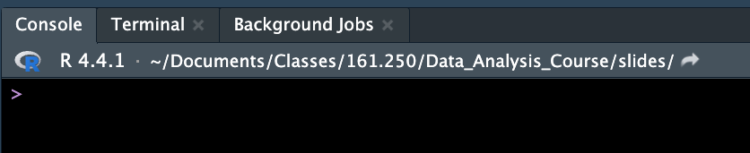
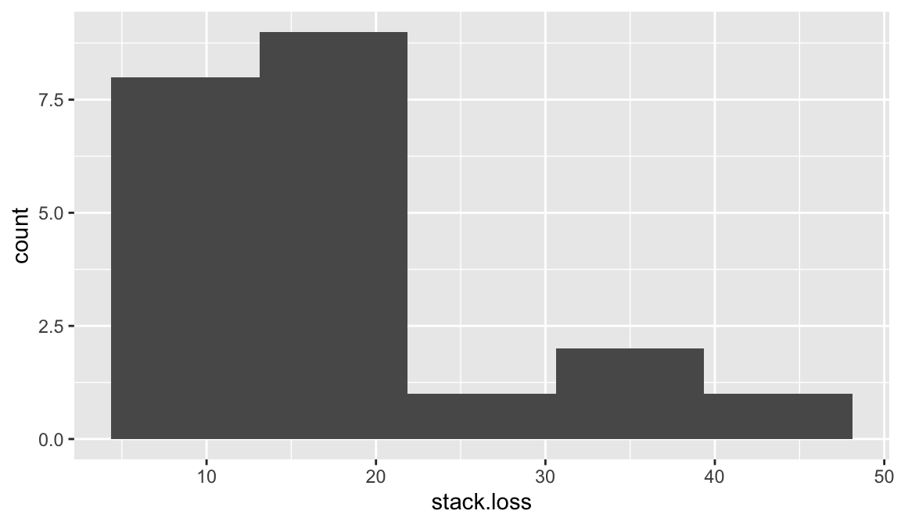
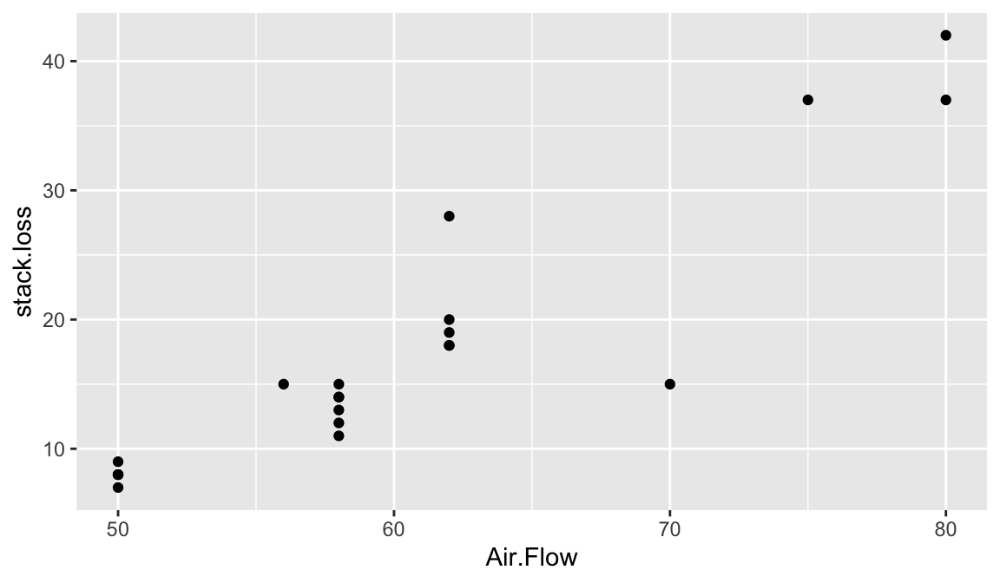
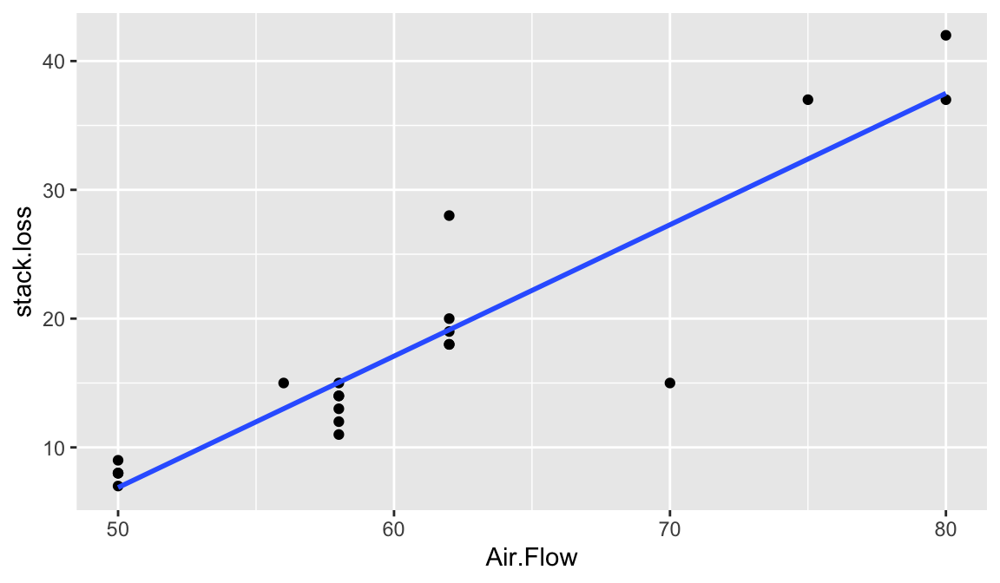

Data analysis is the process of inspecting, cleansing, transforming, and modeling data with the goal of discovering useful information, informing conclusions, and supporting decision-making. (wikipedia)
A data analysis session involves loading the data, graphing, summarizing, and modelling.
Data Analysis
Identify the question you would like to answer
Collect data
Clean data to prepare it for analysis
Analyse data
Interpret the results
Types of data anlysis
Descriptive:
What happened?
Diagnostic:
Why did it happen?
Predictive:
What might happen in the future?
Prescriptive:
What should we do about it?
Getting started with R
We will be using the programming language R for our data analysis
R is the language
R studio is the graphical user interface (GUI)
If you have not installed R and R studio on your computer please see the resources page on Stream about how to do that.
Some R basics
R is case sensitive, so data is not the same as DATA
Similarly beware of spaces and punctuation, particularly in column header
<- (read as “gets”) is the assignment operator. That is, you use <- to assign some content to a variable. The operator = has a slightly different meaning but it can be used in the same way as <-. In R Studio, press ALT and minus key when you are in the R script mode (File >> New File >> R Script).
Comments are denoted by the # symbol. Anything after a # symbol is ignored by R . This is a great way to write yourself notes.
R coding can be hard to write from scratch. So do not hesitate to adopt R codes written by others. Search the internet for R code to do what you want to do. The usual copy and paste trick works!
Warnings vs error messages: R gives warnings typically in <span style='color: orange;'>orange</span> and errors in <span style='color: red;'>red</span>. A warning means your code likely ran but there is something you should be aware of while an error means your code did not run. We recommend first trying to understand what the error is saying, check for common mistakes (missing failing to close a bracket or quotation, misspelling, capitalization, etc. ), then try to google your error message.
You can take notes on your code using the # symbol, called a comment R interprets everything after this symbol as notes not to be run.
R as a calulator
At the most basic level R is a calculator. We can type mathematical equations directly into R.
[1] 4
[1] 4
R Objects, Model Syntax etc.
In R, we work with objects. There are different classes of objects including: character, integer, numeric, vector, matrix, array, data.frame, list, lm (linear model). An object may belong to several classes at once.
Suppose that your data consists of 4 numbers say 1 to 4. We can combine these numbers using the c() function namely c(1,2,3,4) and then assign it to x, an object.
Evidently x is a vector and also belongs to other classes of objects. This can be queried as follows:
The main class it belongs to is queried as
Our data are actually integers and arranged in a pattern. So we can define x as follows:
The colon (:) operator created the desired pattern. Alternative expressions include
Try is(x) and class(x) and check whether our data are recognised as integer class.
We can do many mathematical manipulations on x. Try
Vector elements are accessed by square brackets, []. Try
Assume that our data are actually categorical codes. Then the correct way of defining the character data is to use single quotes as
Now try Try is(x) and class(x). For large patterned categorical data, placing quotes is laborious. So we can change the class as follows:
Assume that you have two batches of data. The first one is
and the second one is
These two batches can be combined into a matrix as follows:
Here the matrix m is formed by binding the columns (vectors). The other option is to bind as rows
Evidently vectors must be of the same length for these commands to work. We can also form a matrix by splitting a vector. Try
and just type m to see the generated matrix on the R console.
To access the first of row of the matrix m, we use m[1,]; to access the first column of m, we use m[,1].
A data frame is an R object that contains vectors; the vectors are stored vertically in a matrix like structure, and can be referred to by the name of the column. The main advantage of a data frame is that the variables in a data frame do not all need to be the same type; e.g. some variables can be of class numeric, and some variables can be of class character. We can create a data frame object using the data.frame() function. This data frame contains two small vectors, the first of which is named ID, and the second NAME. Try
We can access the original vector of interest in the following way:
There are times when it is useful to convert a data frame into a matrix; we can do this with the as.matrix() function.
Type class(m) and see the changes.
Two data frames can also be merged into a single data frame using the merge command.
The internal structure of an R object can be viewed using the diagnostic function str().
Directories
Directories is a location for storing files on your computer. Information (documents) is stored in folders the location of that folder is called a directory. You can think of this as the address of the file.
 For example on my computer my slides for this class are located in a folder called ‘slides’ inside ‘Data_Analysis_course’. The last part of the directory is the most specific folder which is nested inside parent folders.
Set directory in R
In RStudio, set the working directory under the Session menu. It is a good idea to start your analysis as a new project in the File menu so that the entire work and data files can be saved and re-opened easily later on.
This course will be using Quarto*.qmd files rather than raw *.R files. Heard of Rmarkdown? Well, Quarto is the successor to Rmarkdown. So, if you’re just starting to use R, then you should begin with Quarto rather than Rmarkdown, because most/all new development will be going into Quarto.
Quarto files contain text and code, and can be ‘Rendered’ to produce a nicely formatted document, usually in HTML or PDF format, containing sections, text, code, plots, and output. Quarto can also be used to make websites; in fact, the website for this course was made using Quarto.
Most data sets we shall consider in this course are in a tabular form. This means that each variable is a column, each row is an observation, columns are separated by white space (or comma), and each column or row may have a name.
If the data file is stored locally, you should put the data into the same directory as your Quarto or R markdown script. That way, you can (usually) load it easily without having to type the full pathway (e.g., mydata.csv rather than C:/Users/anhsmith/Work/Project1/data/mydata.csv). Better yet, Projects make this much easier.
You can also load data from the web using a URL. For example,
We usually store the data in an R object, here named rangitikei.
Types of data files
The letters after the . at the end of a files name are called the extension and tell you the type of file.
If the data are stored as a *.csv or “comma separated values” file, then you can use the read.csv() or read_csv() function to load the file. If it’s a text file (.txt) with columns separated by spaces or tabs, you can use read.table() or read_table() function. The ones with underscores ( read_csv() and read_table() ) are in the readr package, so you’ll need to load it first (though readr is part of tidyverse, so if you load tidyverse you’re all set). We will introduce tidyverse in a moment.
You can also load Microsoft Excel files using functions read_excel(), available in the readxl package.
Note that Excel files usually contain blanks for missing or unreported data or allocate many rows for variable description, which can cause issues while importing them.
Loading packages
Many (but not all) R packages are hosted at a repository called CRAN (Comprehensive RArchive Network). The package install option within RStudio can download and install these optional packages under the menu Packages >> Install. You can also do this using the command install.packages.
In this course we will use multiple packages. You need to load them with the library() function every time you run a script/R session but you only need to install them once.
Welcome to the tidyverse
We will be largely using the tidyverse suite of packages for data organisation, summarising, and plotting; see https://www.tidyverse.org/.
Let’s load that package now:
Recommended reading to accompany this workshop is pages 1-11 of R for Data Science https://r4ds.hadley.nz/
Tidy data
There are three interrelated rules that make a dataset tidy:
Each variable is a column; each column is a variable.
Each observation is a row; each row is an observation.
Each value is a cell; each cell is a single value.
Figure 1: Tidy data
Why ensure that your data is tidy?
There are two main advantages:
There’s a general advantage to picking one consistent way of storing data. If you have a consistent data structure, it’s easier to learn the tools that work with it because they have an underlying uniformity.
There’s a specific advantage to placing variables in columns because it allows R’s vectorized nature to shine. Most built-in R functions work with vectors of values.
dplyr, ggplot2, and all the other packages in the tidyverse are designed to work with tidy data.
Summarizing data
Summarizing data is a large part of data analysis.
dplyr
The following six functions of dplyr are very useful for data wrangling :
For selecting columns, use select()
For subsetting data, use filter()
For re-ordering (e.g. ascending/descending), use arrange()
For augmenting new calculated columns, use mutate()
For computing summary measures, use summarise()
For group-wise computations (e.g. summary measures), use group_by()
There are many other functions such as transmute() which will add newly calculated columns to the existing data frame but drop all unused columns. The across() function extends group_by() and summarise() functions for multiple column and function summaries. For example, you like to report rounded data in a table, which calls for an operation across both rows and columns.
Piping
Tip
The piping operation is a fundamental aspect of computer programming. The semantics of pipes is taking the output from the left-hand side and passing it as input to the right-hand side.
The R package magrittr introduced the pipe operator %>% and can be pronounced as “then”. In RStudio windows/Linux versions, press Ctrl+Shift+M to insert the pipe operator. On a Mac, use Cmd+Shift+M.
R also has its own pipe, |>, which is an alternative to %>%. I tend to use |>. If you want to change the pipe inserted automatically with Ctrl+Shift+M, find on the menu Tools > Global Options, then click on Code and check the box that says “Use Native Pipe Operator”.
We often pipe the dplyr functions, and the advantage is that we show the flow of data manipulation and subsequent graphing. This approach also helps to save memory, and dataframes are not unnecessarily created, a necessity for a big data framework.
Graphing with ggplot2
The R library ggplot2 is very powerful for plotting but you may find the syntax little strange. There are plenty of examples at the ggplot2 online help website. The ggplot2 package is loaded as part of the tidyverse set of packages.
Advantages of ggplot2 are the following:
employs the “grammar of graphics” of [@Wilkinson]
plotting involves a high level of abstraction
very flexible and complete graphics system
theme system for getting attractive plots
Fast growing and actively developed
Some disadvantages of ggplot2 are the following:
3-dimensional graphics (opt for rgl package instead)
Graph-theory type graphs (nodes/edges layout; opt for igraph and other packages)
Interactive graphics (opt for plotly, ggvis and other packages)
Grammar of Graphics
The main idea behind the grammar of graphics of [@Wilkinson] is to mimic the manual graphing approach and define building blocks and combine them to create a graphical display. The building blocks of a graph are:
data
aesthetic mapping
geometric object
transformation or re-expression of data
scales
coordinate system
position adjustments
faceting
Aesthetic Mapping (aes)
In ggplot land aesthetic means visualisation features or aesthetics. These are
position (i.e., on the x and y axes)
color (“outside” color)
fill (“inside” color)
shape (of points)
linetype
size
Aesthetic mappings are set with the aes() function.
Geometric Objects (geom)
Geometric objects or geoms are the actual marking or inking on a plot such as:
points (geom_point, for scatter plots, dot plots, etc)
lines (geom_line, for time series, trend lines, etc)
boxplot (geom_boxplot, for boxplots)
A plot must have at least one geom but there is no upper limit. In order to add a geom to a plot, the + operator is employed. A list of available geometric objects can be obtained by typing geom_<tab> in Rstudio. The following command can also be used which will open a Help window.
help.search("geom_", package = "ggplot2")
Tidying data
The principles of tidy data might seem so obvious that you wonder if you’ll ever encounter a dataset that isn’t tidy. Unfortunately, however, most real data is (very) untidy. There are two main reasons:
Data is often organized to facilitate some goal other than analysis. For example, it’s common for data to be structured to make data entry easy.
Most people aren’t familiar with the principles of tidy data, and it’s hard to derive them yourself unless you spend a lot of time working with data.
This means that most real analyses will require at least a little tidying. You’ll begin by figuring out what the underlying variables and observations are. Sometimes this is easy; other times you’ll need to consult with the people who originally generated the data.
Tidying data example
The hospital admissions dataset is untidy because it does allocate many columns for a variable.
The main response variable namely the number of admissions is allocated different columns depending on the North and South locations. This format is also called wide format which can be made into a tidy long format. We can use the dplyr function pivot_longer() to change this data into long format. Try-
The command pivot_wider() does the opposite to pivot_longer()
Common data issues
Spelling, capitalization, typos, and white spaces
there are some handy functions in stringr and janitor packages
NAs: there is a difference between not observed, not recorded, and not applicable. This difference requires understanding of the data and data entry process for that project
can remove NAs using na.omit(), !is.na(), na.rm=T, etc. depending on what function you are using. See help menu for more details
Multiple types of data in a single column or wrong data type
can force a data class using as.numeric() for example
Joining data
Mutating joins allow you to combine variables from multiple tables. For example, consider the flights and airlines data from the nycflights13 package. In one table we have flight information with an abbreviation for carrier, and in another we have a mapping between abbreviations and full names. You can use a join to add the carrier names to the flight data:
# A tibble: 336,776 × 9
year month day hour origin dest tailnum carrier name
<int> <int> <int> <dbl> <chr> <chr> <chr> <chr> <chr>
1 2013 1 1 5 EWR IAH N14228 UA United Air Lines Inc.
2 2013 1 1 5 LGA IAH N24211 UA United Air Lines Inc.
3 2013 1 1 5 JFK MIA N619AA AA American Airlines Inc.
4 2013 1 1 5 JFK BQN N804JB B6 JetBlue Airways
5 2013 1 1 6 LGA ATL N668DN DL Delta Air Lines Inc.
6 2013 1 1 5 EWR ORD N39463 UA United Air Lines Inc.
7 2013 1 1 6 EWR FLL N516JB B6 JetBlue Airways
8 2013 1 1 6 LGA IAD N829AS EV ExpressJet Airlines Inc.
9 2013 1 1 6 JFK MCO N593JB B6 JetBlue Airways
10 2013 1 1 6 LGA ORD N3ALAA AA American Airlines Inc.
# ℹ 336,766 more rows
As well as x and y, each mutating join takes an argument by that controls which variables are used to match observations in the two tables.
Types of join
There are four types of mutating join, which differ in their behaviour when a match is not found.
inner_join(x, y) only includes observations that match in both x and y.
left_join(x, y) includes all observations in x, regardless of whether they match or not. This is the most commonly used join because it ensures that you don’t lose observations from your primary table.
right_join(x, y) includes all observations in y. It’s equivalent to left_join(y, x), but the columns and rows will be ordered differently.
full_join() includes all observations from x and y.
The left, right and full joins are collectively know as outer joins. When a row doesn’t match in an outer join, the new variables are filled in with missing values.
A typical data analysis session in R/RStudio
A data analysis session in R/RStudio involves loading the data, graphing, and modelling. You finally save your outputs or produce a Report.
When you begin your analysis in RStudio, start it as a new project in the File menu. You can save all your work in one go when you quit the RStudio software. You can always load your project later on to continue the analysis.
For the sack of simplicity, let us use an R default dataset called stackloss giving the operational data of a plant for the oxidation of ammonia to nitric acid.
The distribution of the response variable stack.loss is explored using a histogram below:

Histograms are not good displays for small datasets. In order to see the size or length of stack.loss data, we select the stack.loss variable and then summarise the size using the n() option.
n()
1 21
The following commands will also work.
[1] 21
[1] 21
We may also explore how well stack.loss is related Air.Flow to using a scatter plot. For this, we type the command plot

The relationship is roughly linear. So we may fit a straight line model using the lm command.
We can query this model asking for its summary using the summary() function.
Call:
lm(formula = stack.loss ~ Air.Flow, data = stackloss)
Residuals:
Min 1Q Median 3Q Max
-12.2896 -1.1272 -0.0459 1.1166 8.8728
Coefficients:
Estimate Std. Error t value Pr(>|t|)
(Intercept) -44.13202 6.10586 -7.228 7.31e-07 ***
Air.Flow 1.02031 0.09995 10.208 3.77e-09 ***
---
Signif. codes: 0 '***' 0.001 '**' 0.01 '*' 0.05 '.' 0.1 ' ' 1
Residual standard error: 4.098 on 19 degrees of freedom
Multiple R-squared: 0.8458, Adjusted R-squared: 0.8377
F-statistic: 104.2 on 1 and 19 DF, p-value: 3.774e-09
R default model summary is bit too long. We may just glance the overall quality measures of the fitted model as follows:
r.squared
0.85
adj.r.squared
0.84
sigma
4.10
statistic
104.20
p.value
0.00
df
1.00
logLik
-58.37
AIC
122.74
BIC
125.87
deviance
319.12
df.residual
19.00
nobs
21.00
For processing using Rmarkdown, we may use the codes which will give a tidy tabular output in the word-processed output.
term
estimate
std.error
statistic
p.value
(Intercept)
-44.13
6.11
-7.23
0
Air.Flow
1.02
0.10
10.21
0
The fitted model is shown below:

The fitted model can also be displayed on the scatter plot using the old style plot and abline commands.
It is a good idea to check the quality of secondary data sourced from elsewhere. For example, there could be missing values in the dataset. Consider the Telomeres data downloaded from http://www.massey.ac.nz/~anhsmith/data/rsos192136_si_001.xlsx
The missingness of data can be quickly explored using many R packages. The downloaded Telomeres dataset contain many missing values.
or
The term Missing completely at random (MCAR) is often used to mean there is there is no pattern to the missing data themselves or alternatively the missingness is not related to any other variable or data in the dataset. In other words, the probability of missingness is the same for all units. So no bias is caused by the missing data, and we can discard cases with missing data when we fit models.
In practice, we often find missing data do have a relationship with other variables in the dataset but the actual missing values are random. This situation of data conditionally missing at random is called Missing at random (MAR) data. For a particular survey question, the response rate may differ depending on the respondent’s gender. In this situation, the actual missingness may be random but still related to the gender variable.
Missing not at random (MNAR) is the pattern when missingness is related to other variables in the dataset, as well as the values of the missing data are not random. In other words, there is a predictable pattern in the missingness. So we cannot avoid the bias when missing cases are omitted.
There are also situations such as censoring where we just record a single value without actually measuring the variable of interest.
There are also R packages to perform automatic investigation for data cleaning. Try-
Rule based validation is enabled in the R package validate. The R package janitor has a function get_dupes() to find duplicate entries in the dataset. Cleaner package will allow to clean the variables so that the columns are consistent in terms of the factor, date, numerical variable types. You will be largely using data that are already cleaned for your assignments but be aware that you have to perform data cleaning and perform necessary quality checks before analysis.